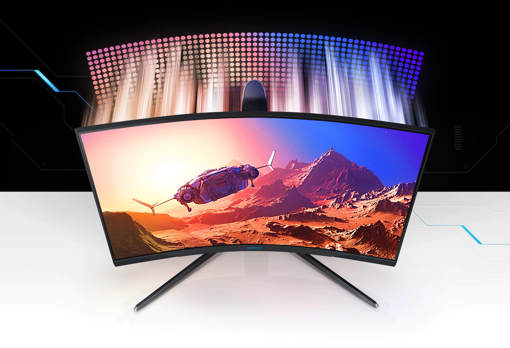
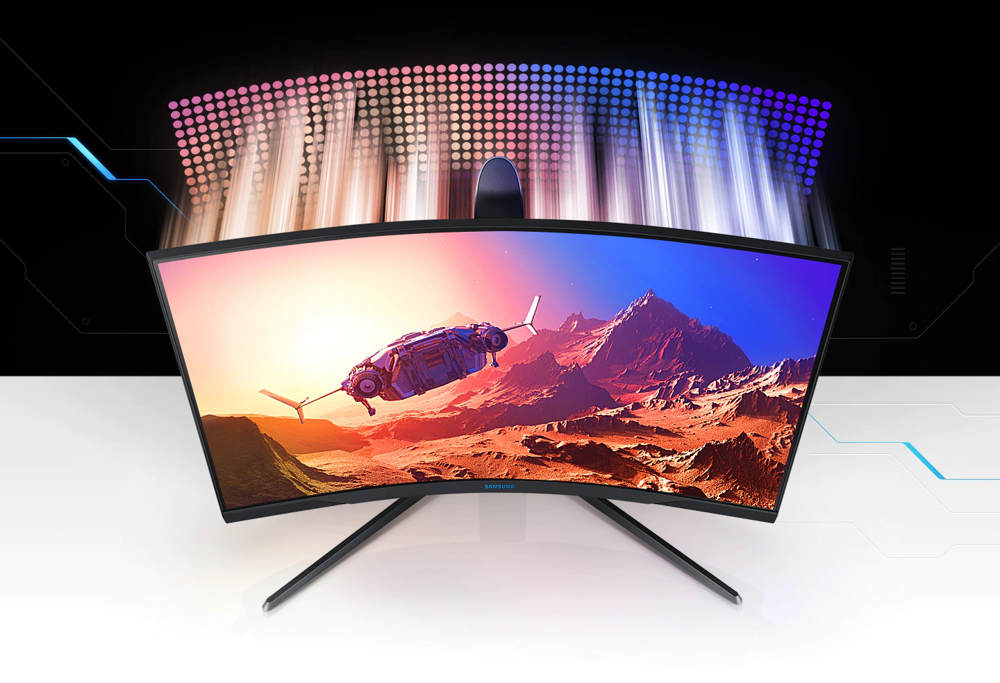

Imersiune completă în situația jocului
Scenele live te înconjoară. Ecranul curbat 1000R vă umple vederea periferică și vă permite să vedeți pe ecran cele mai mici detalii despre aspectul și acțiunile eroului. Experimentați nivelul de joc atunci când experimentați o unitate pe care nu ați experimentat-o până acum.
QLED înseamnă culori mai luminoase și mai clare.
Reproducerea celor mai fine nuanțe de culoare. Tehnologia QLED reproduce o gamă largă de tonuri de culoare pe ecran. Afișarea realistă a scenelor de joc este uimitoare.
 

Suport tehnologic HDR600
Suportul pentru tehnologia HDR600 cu gamă dinamică înaltă oferă un contrast sporit cu negri mai adânci și albi mai strălucitori.
Răspuns rapid și scene de acțiune fluide
Deveniți câștigătorul tuturor inamicilor în cele mai dinamice bătălii. Tehnologia RapidCurve de 240Hz elimină întârzierea chiar și în cele mai dinamice situații de joc. Răspunsul de 1 milisecundă al ecranului vă va permite să vă grăbiți asupra inamicului exact în momentul în care îl vedeți. În același timp, cursorul mouse-ului se va deplasa instantaneu la punctul dorit de pe ecran și nu va lăsa nicio urmă în spatele acestuia.
Compatibilitatea cu tehnologia G-Sync, menține GPU-ul și ecranul sincronizate, eliminând întârzierea și jitter-ul. Scenele dinamice ale jocului sunt redate fără probleme și constant cu AMD FreeSync Premium Pro, ajutându-vă să ieșiți mereu în frunte.
Rezoluție WQHD
Rezoluția WQHD a Space Gaming Monitor este de 1,7 ori rezoluția Full HD pentru detalii și claritate excepționale.